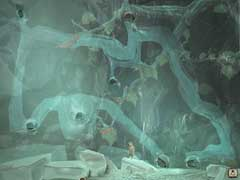
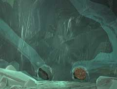
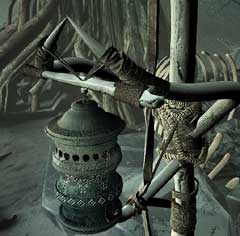
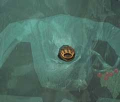
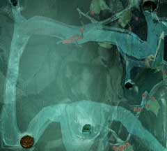

|

洞窟の奥へ移動したら、まずこの壁を見てもらいたい。

右下に、二つの穴があるので画像のように右側の穴を「コルク栓」でふさいでもらいたい。一見何の意味もないようだが、ここをふさがないと、ネズミを思いどおりに誘導できないのだ。

コルク栓で穴をふさいだら、村に点在する奇妙なオブジェに「祈りの車輪」を取り付けて、回してみよう。音を聞きつけたフクロウ(ハルファン)が飛んできて、オブジェの上に留まるだろう。 飛んできたフクロウの姿を見たネズミは、一目散に穴の中へ逃げ込むだろう。そう、あなたが仕組んだとおり、左側の穴へ。

次に、この位置にコルク栓を付け替えて欲しい。フクロウにおびえるネズミは、穴の奥へ奥へと行きたがっている。そのため、これは幸運とばかりにさらに奥へと移動するだろう。

次に、画像のようにコルク栓を付け、左上の穴から「水の入った水筒」の水を注ぎ込んで欲しい。画像のように、ネズミは上へと移動してしまう。 ネズミとはなんと単純な生き物だろうか。目の前の「幸福の赤い実」に目を奪われ、それを口にほおばってしまう。そして、先ほどフクロウがいたことなど忘れて、穴から出ようとするのだ。 高い段差が越えられず、困っているネズミの手助けをしなくてはならない。ネズミの真上にある穴から、「魚の骨」を入れよう。ネズミは、その骨を上り、あなたの元へ「幸運の木の実」を届けてくれるだろう。 幸運の木の実を手に入れたら、祈祷師の所へ移動しよう。コルク栓も、祈りの車輪も回収する必要はない。 祈祷師に話しかけると、彼女はさっそく木の実を使い、ハンスの夢の世界へとあなたを誘ってくれるだろう。
| << 前へ |
|